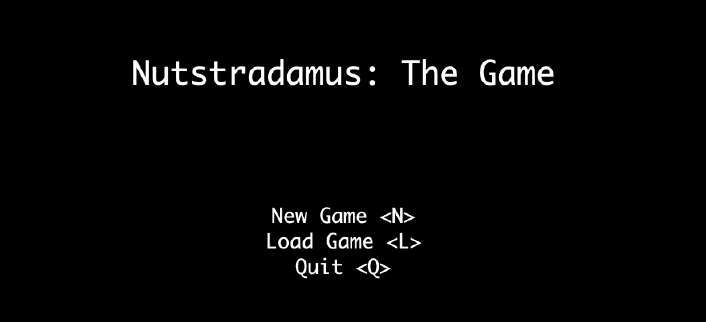
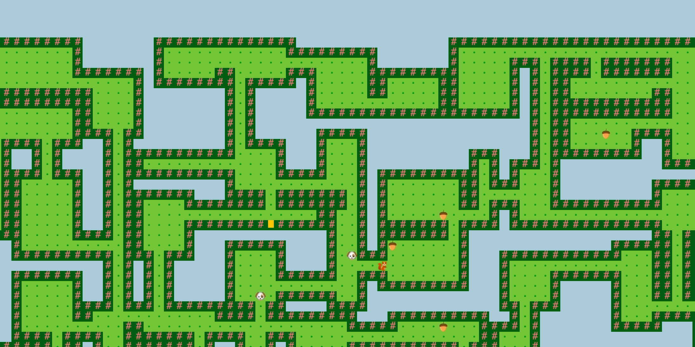
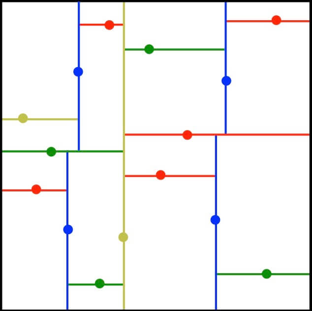

For the capstone project in CS 61B at UC Berkeley, my friend Jason Diwa and I built a tile-based arcade game in Java. While we were provided with the tile-rendering engine, every other aspect of the design and implementation was left completely up to us.
In the game, you play as Nutstradamus, a prophetic squirrel who seeks enlightenment and eternal salvation through collecting acorns. However, you are challenged by dogs who follow you in hot pursuit. If the dogs catch you before you have collected every acorn, you lose the game.
The world map is pseudo-randomly generated, and the user inputs a seed to the game that is used in world-generation so the same world can be revisited. The first step in our algorithm is to randomly partition the entire field into rectangular sections like so:
Then, we randomly choose a portion of these partitions to be "rooms," and create random hallways until everything is connected. Once the map is created, the location of the squirrel, dogs, and acorns are randomly chosen.
The dogs continually chase you throughout the game, and are powered by the A* algorithm. We were able to repurpose code from another project in CS 61B that involved implementing A*. We elected the Manhattan distance hueristic for use in A*, as the player only has options to move up, down, left, and right.
Additional feautures that we added include save/load capabilities to return to the same game state later, the ability to toggle sight of the paths the dogs will take to get to you, and a heads-up display that shows information about each tile when the cursor is hovered over it.
While I had already been exposed to Git before this project, physically working off of the same code with another person was a new challenge. Working on separate branches and resolving merge conflicts was essentially new to me, and I learned lots about Git and general best practices in version control.
The design and implementation problems we faced were extremely challenging. Besides the fact that we spent over 40 hours on this project, we rewrote or scrapped hundreds of lines of code and had to battle the inevitably increasing complexity of our project. While each individual problem can be challenging on its own, we had to also think about finding a solution that elegantly fit in with the rest of the project. Given our time constrictions (we had just over two weeks to complete the project), I am very proud of our final product, and know that my skills in designing software have greatly improved.
Skills & tools: Managing complexity, Java, Git, UI design